Beyond the Model: Demystifying Harness Effects in Software Engineering Agents
超越模型本身：SE Agent 的 Harness 效应实证
NanoHarness 组件级消融：工具注册/上下文压缩/planning/subagents/lazy skills 各自贡献；fixed-model 下 harness 差距可达 19.4pp。
翻译范围：正文全部段落走三步精翻（直译→反思→雅化）；脚注与参考文献不译；公式、数字、模型名、数据集名、引用标记按原文 Unicode 保真；表格还原为可复制文本。
Table 1
| Skill | Purpose | |||||
|---|---|---|---|---|---|---|
| T i | l W kfl | G id t | i l b | d t k | l i | f |
Table 2
| injects reminders when the plan has not been updated for | |||
|---|---|---|---|
| several rounds. | Dataset | Task Language | Size |
| ProgramBench [57] | Repository generation Rust, Go, C/C++, Java, Haskell | 200 | |
| SWE-bench Pro [11] | Issue repair Python, JS/TS, Go | 731 | |
| General/Task-Specific Subagents. The subagent mod- | GitTaskBench [31] | Repository task solving Python | 54 |
| ule provides on-demand specialist capabilities while leav- |
Table 3
| mini-SWE-agent on SWE-bench | Verified. | ||
|---|---|---|---|
| Harness | Model (weak →strong) | mini-SWE | Gain |
| SWE-agent | Claude 3.7 Sonnet | 52.80 | +9.60 |
| SWE-agent | Claude 4 Sonnet | 64.93 | +4.07 |
| OpenHands | Claude 3.7 Sonnet | 52.80 | +13.60 |
| OpenHands | Claude 4 Sonnet | 64.93 | +5.47 |
| Tools | Claude 3.7 Sonnet | 52.80 | +10.40 |
| Tools | Claude 4 Sonnet | 64.93 | +7.47 |
| Tools | Claude 4 Opus | 67.60 | +5.60 |
Table 4
| Harness | Model | Step | Tool | Prompt | Response | Harness | Model | Step | Tool | Prompt | Response |
|---|---|---|---|---|---|---|---|---|---|---|---|
| mini-SWE | DeepSeek-R1 | 17.71 | 15.97 | 127,552 | 31,280 | ||||||
| mini-SWE | Qwen3-Max | 31.12 | 30.02 | 369,443 | 5,110 | mini-SWE | DeepSeek-V3 | 15.90 | 14.69 | 104,289 | 1,886 |
| mini-SWE | Qwen3.5-Plus | 89.72 | 88.05 | 2,347,080 | 30,942 | mini-SWE | DeepSeek-V3.1 | 58.66 | 56.66 | 1,000,415 | 6,905 |
| mini-SWE | Qwen3.6-Plus | 57.81 | 56.10 | 1,573,644 | 66,793 | mini-SWE | DeepSeek-V3.2 | 79.99 | 72.23 | 1,687,660 | 13,665 |
| mini-SWE | Qwen3.6-Max | 54.15 | 52.47 | 1,379,883 | 27,237 | mini-SWE | DeepSeek-V4-Pro | 61.77 | 60.12 | 1,860,832 | 29,326 |
| mini-SWE | Qwen3.7-Max | 43.58 | 42.36 | 770,319 | 18,732 | OpenCode | DeepSeek-R1 | 8.98 | 7.85 | 146,731 | 20,787 |
| OpenCode | Qwen3-Max | 35.95 | 39.87 | 1,069,425 | 6,442 | OpenCode | DeepSeek-V3 | 36.42 | 34.66 | 1,163,976 | 5,488 |
| OpenCode | Qwen3.5-Plus | 37.84 | 57.13 | 1,702,800 | 9,505 | OpenCode | DeepSeek-V3.1 | 74.91 | 74.08 | 2,874,875 | 10,661 |
| OpenCode | Qwen3.6-Plus | 37.91 | 61.15 | 1,499,056 | 11,132 | OpenCode | DeepSeek-V3.2 | 89.42 | 101.18 | 2,796,537 | 19,093 |
| OpenCode | Qwen3.6-Max | 36.49 | 64.87 | 1,395,815 | 11,283 | OpenCode | DeepSeek-V4-Pro | 31.96 | 70.42 | 1,178,990 | 16,397 |
| OpenCode | Qwen3.7-Max | 37.38 | 72.23 | 1,523,661 | 14,921 |
Table 5表 5 进一步显示，OpenCode 对 DeepSeek 执行行为的改变远比对 Qwen 激进。在 DeepSeek-V3.1 与 DeepSeek-V3.2 上，OpenCode 的步数、工具调用与 prompt token 均远超 mini-SWE-agent，说明其探索范围更广、对产品级工作流的使用更重；而到了 DeepSeek-V4-Pro，OpenCode 步数反而少于 mini-SWE-agent，每步工具调用却更多。可见，最强的 DeepSeek 模型能以更紧凑、更依赖工具的方式与 OpenCode 交互，但由此获得的相对 mini-SWE-agent 的性能收益已微乎其微。
| g p | Q | Harness | Model | Step | Tool | Prompt | Response | ||||
|---|---|---|---|---|---|---|---|---|---|---|---|
| Harness | Model | Step | Tool | Prompt | Response | mini-SWE | DeepSeek-R1 | 17.71 | 15.97 | 127,552 | 31,280 |
| mini-SWE | Qwen3-Max | 31.12 | 30.02 | 369,443 | 5,110 | mini-SWE | DeepSeek-V3 | 15.90 | 14.69 | 104,289 | 1,886 |
| mini-SWE | Qwen3.5-Plus | 89.72 | 88.05 | 2,347,080 | 30,942 | mini-SWE | DeepSeek-V3.1 | 58.66 | 56.66 | 1,000,415 | 6,905 |
| mini-SWE | Qwen3.6-Plus | 57.81 | 56.10 | 1,573,644 | 66,793 | mini-SWE | DeepSeek-V3.2 | 79.99 | 72.23 | 1,687,660 | 13,665 |
| mini-SWE | Qwen3.6-Max | 54.15 | 52.47 | 1,379,883 | 27,237 | mini-SWE | DeepSeek-V4-Pro | 61.77 | 60.12 | 1,860,832 | 29,326 |
| mini-SWE | Qwen3.7-Max | 43.58 | 42.36 | 770,319 | 18,732 | OpenCode | DeepSeek-R1 | 8.98 | 7.85 | 146,731 | 20,787 |
| OpenCode | Qwen3-Max | 35.95 | 39.87 | 1,069,425 | 6,442 | OpenCode | DeepSeek-V3 | 36.42 | 34.66 | 1,163,976 | 5,488 |
| OpenCode | Qwen3.5-Plus | 37.84 | 57.13 | 1,702,800 | 9,505 | OpenCode | DeepSeek-V3.1 | 74.91 | 74.08 | 2,874,875 | 10,661 |
| OpenCode | Qwen3.6-Plus | 37.91 | 61.15 | 1,499,056 | 11,132 | OpenCode | DeepSeek-V3.2 | 89.42 | 101.18 | 2,796,537 | 19,093 |
| OpenCode | Qwen3.6-Max | 36.49 | 64.87 | 1,395,815 | 11,283 | OpenCode | DeepSeek-V4-Pro | 31.96 | 70.42 | 1,178,990 | 16,397 |
| OpenCode | Qwen3.7-Max | 37.38 | 72.23 | 1,523,661 | 14,921 |
Table 6
| point gain over mini-SWE-agent. For DeepSeek-V4-Pro, | harnesses on ProgramBench. | ||
|---|---|---|---|
| it improves the score from 45.14 to 51.35, corresponding | |||
| to a 6.21-point gain. These improvements are larger than | Harness | Qwen3.7-Max | DeepSeek-V4-Pro |
| those of any single component, showing that multiple | mini-SWE-agent | 42.88 | 45.14 |
| harness mechanisms can complement one another when | NanoHarness | 50.25 (+7.37%) | 51.35 (+6.21%) |
| integrated into a unified workflow. | OpenCode | 51.68 (+8.80%) | 52.48 (+7.34%) |
| However, the combined improvement is not simply the | ClaudeCode | 52.33 (+9.45%) | 52.76 (+7.62%) |
Table 7表 7 呈现三种主要行为模式。其一，面向工具的机制加剧仓库交互：工具注册表适度提高工具调用次数，任务特定子智能体使 Qwen3.7-Max 与 DeepSeek-V4-Pro 的工具调用分别增加 115.76% 与 73.10%。鉴于任务特定子智能体提升性能而通用子智能体不然，额外的工具使用唯有面向任务时才有价值。其二，上下文压缩降低成本却损害性能：两个模型的 prompt token 分别削减 54.29% 与 77.02%，但 RQ2 中对应分数下降 4.86 与 3.85 个百分点，可见被压缩的历史可能丢失后续所需的需求或调试状态。其三，完整 NanoHarness 配置在受控 prompt 增长下改进性能：工具调用分别增加 131.18% 与 83.58%，prompt token 增幅却小得多（+16.37% 与 +7.26%），分数较 mini-SWE-agent 提高 7.37 与 6.21 个百分点——组合收益来自更结构化的交互，而非单纯追加 prompt 预算。
| ProgramBench. Percentages in parentheses indicate relative | changes compared with mini-SWE of the same model. |
|---|---|
| Model Configuration Step | Tool Prompt Response |
| Qwen3.7-Max mini-SWE 104.13 | 104.14 3,978,148 46,763 |
| Qwen3.7-Max + tools 105.89 (+1.69%) | 120.87 (+16.06%) 4,299,572 (+8.08%) 44,366 (-5.13%) |
| Qwen3.7-Max + planning 102.19 (-1.86%) | 104.35 (+0.20%) 4,817,378 (+21.10%) 65,679 (+40.45%) |
| Qwen3.7-Max + skills 108.69 (+4.38%) | 109.20 (+4.86%) 4,503,568 (+13.21%) 47,913 (+2.46%) |
| Qwen3.7-Max + context 61.77 (-40.68%) | 62.06 (-40.41%) 1,818,344 (-54.29%) 26,577 (-43.17%) |
| Qwen3.7-Max + specific subagents 141.29 (+35.69%) 224.69 | (+115.76%) 4,270,462 (+7.35%) 72,240 (+54.48%) |
| Qwen3.7-Max + general subagents 99.06 (-4.87%) | 157.40 (+51.14%) 4,372,546 (+9.91%) 67,919 (+45.24%) |
| Qwen3.7-Max + all (NanoHarness) 133.68 (+28.38%) 240.75 | (+131.18%) 4,629,172 (+16.37%) 64,751 (+38.47%) |
| DeepSeek-V4-Pro mini-SWE 142.19 | 181.84 10,065,204 91,370 |
| DeepSeek-V4-Pro + tools 164.11 (+15.41%) | 204.20 (+12.29%) 11,979,965 (+19.02%) 86,982 (-4.80%) |
| DeepSeek-V4-Pro + planning 140.66 (-1.07%) | 184.27 (+1.33%) 10,418,872 (+3.51%) 91,832 (+0.51%) |
| DeepSeek-V4-Pro + skills 147.85 (+3.98%) | 179.22 (-1.44%) 10,415,011 (+3.48%) 90,942 (-0.47%) |
| DeepSeek-V4-Pro + context 54.17 (-61.91%) | 56.61 (-68.87%) 2,312,701 (-77.02%) 33,747 (-63.07%) |
| DeepSeek-V4-Pro + specific subagents 190.45 (+33.94%) | 314.77 (+73.10%) 9,104,564 (-9.54%) 118,453 (+29.64%) |
| DeepSeek-V4-Pro + general subagents 169.54 (+19.24%) | 332.14 (+82.65%) 15,284,596 (+51.86%) 145,124 (+58.83%) |
| DeepSeek-V4-Pro + all (NanoHarness) 203.53 (+43.14%) | 333.84 (+83.58%) 10,795,507 (+7.26%) 103,443 (+13.21%) |
| y p | |
| find that models mainly exhibit two failure modes on | mini-SWE |
| ProgramBench. (1) Excessive probing. At the early | + tools |
| xploration stage, the agent blindly performs a large num- | + planning |
| er of fine-grained behavioral probes on the reference | + skills |
| inary, but fails to cover the core functionality of the | + context |
| arget program. As a result, it exhausts the budget and | + specific subagents |
| finishes the task hastily. (2) Insufficient probing. The | + general subagents |
| gent assumes that it has already understood the core | + all |
| unctionality of the program after only a small number of | 0 50 100 150 200 250 300 |
| robes (e.g., ≤20), and after implementing the program, | All executable probes per trajectory |
| t lid t th l ti i l f k t t |
Beyond the Model: Demystifying Harness
超越模型：揭秘 Harness
Effects in Software Engineering Agents
软件工程智能体中的效应
Haichuan Hu1 Quanjun Zhang1 Shengcheng Yu2 Zhifei Chen1
Haichuan Hu1 Quanjun Zhang1 Shengcheng Yu2 Zhifei Chen1
Tianyu Luo3 Chunrong Fang3 Zhenyu Chen3 Liang Xiao1
Tianyu Luo3 Chunrong Fang3 Zhenyu Chen3 Liang Xiao1
1Nanjing University of Science and Technology 2Technical University of Munich 3Nanjing University
1南京理工大学 2慕尼黑工业大学 3南京大学
huhaichuan2024@gmail.com, quanjunzhang@njust.edu.cn, shengcheng.yu@tum.de
huhaichuan2024@gmail.com, quanjunzhang@njust.edu.cn, shengcheng.yu@tum.de
chenzhifei@njust.edu.cn, Ty_L191025@outlook.com, fangchunrong@nju.edu.cn
chenzhifei@njust.edu.cn, Ty_L191025@outlook.com, fangchunrong@nju.edu.cn
zychen@nju.edu.cn, xiaoliang@mail.njust.edu.cn
zychen@nju.edu.cn, xiaoliang@mail.njust.edu.cn
Large Language Model (LLM)-based agents are increasingly used for software engineering tasks, yet their performance is not determined by the base model alone. The agent harness substantially shapes how SE agents interact with repositories, execute actions, and validate solutions. However, the role of harness design remains insufficiently understood, especially across different models, tasks, and harness components. In this paper, we present a systematic empirical study of harness effects in SE agents. We first evaluate two representative harnesses, mini-SWE-agent and OpenCode, with ten models from two prominent open-weight model families, Qwen and DeepSeek, on three benchmarks: SWE-bench Pro, ProgramBench, and GitTaskBench. We then construct NanoHarness, a lightweight modular harness built on top of mini-SWE-agent, and use it to analyze five representative harness components: tool registry, context compression, explicit planning, subagents, and lazy skills. Experimental results show that harness effectiveness depends jointly on model capability and task type. Complex harnesses provide diminishing marginal gains on SWE-style issue repair as model capability improves, but can benefit stronger models on more complex and open-ended repository-level tasks. Component-level analysis on ProgramBench further shows that structured tool use and task-specific subagents provide the most stable improvements, while context compression and general subagents can hurt repository-generation performance. When combined, NanoHarness improves over mini-SWE-agent by 7.37 and 6.21 percentage points on Qwen3.7-Max and DeepSeek-V4-Pro, respectively, recovering most of the gains of product-level harnesses. These findings highlight harness design as a first-class factor in SE-agent performance and provide insights for building more effective and efficient coding agents.
基于大语言模型（LLM）的智能体正被越来越广泛地用于软件工程任务，但其性能并非仅由基座模型决定。Agent harness 在很大程度上决定了 SE 智能体与仓库交互、执行动作和验证方案的方式。然而，harness 设计的作用尚缺乏深入理解，尤其在不同模型、任务与 harness 组件之间更是如此。本文对 SE 智能体中的 harness 效应开展系统性实证研究。我们首先在三个基准（SWE-bench Pro、ProgramBench、GitTaskBench）上，使用来自 Qwen 与 DeepSeek 两个主流开源权重模型家族的十个模型，评估 mini-SWE-agent 与 OpenCode 两个代表性 harness。随后，我们在 mini-SWE-agent 之上构建轻量级模块化 harness NanoHarness，用以分析五个代表性 harness 组件：工具注册表、上下文压缩、显式规划、子智能体与惰性技能。实验结果表明，harness 的有效性同时取决于模型能力与任务类型：在 SWE 风格的 issue 修复任务上，随着模型能力增强，复杂 harness 的边际收益递减；而在更复杂、更开放式的仓库级任务上，复杂 harness 反而能使更强的模型受益。ProgramBench 上的组件级分析进一步显示：结构化工具使用与任务特定子智能体带来最稳定的改进，上下文压缩与通用子智能体则可能损害仓库生成性能。组合部署时，NanoHarness 在 Qwen3.7-Max 与 DeepSeek-V4-Pro 上分别较 mini-SWE-agent 提升 7.37 和 6.21 个百分点，收复了产品级 harness 的大部分收益。这些发现表明，harness 设计是影响 SE 智能体性能的一等因素，可为构建更有效、更高效的编码智能体提供参考。
arXiv:2609.32459v1 [cs.SE] 26 Sep 2026
arXiv:2609.32459v1 [cs.SE] 26 Sep 2026
KEYWORDS Large Language Models, Agent Harness, Software Engineering, Code Generation, Coding Agents
关键词 大语言模型、Agent Harness、软件工程、代码生成、编码智能体
DATE September 26, 2026
日期 2026 年 9 月 26 日
improvement. These motivates a controlled analysis of which harness design choices drive such gains and whether they transfer across models and tasks.
提升。这些现象促使我们开展受控分析：究竟哪些 harness 设计选择带来了上述收益，这些收益又能否跨模型、跨任务迁移。
1Introduction1 引言
Large Language Model (LLM)-based agents are increas- ingly used to solve Software Engineering (SE) tasks, such as issue resolution [11, 56, 64], code modifica- tion [14, 16, 22], and test generation [29, 47]. While much progress has been driven by stronger foundation models (e.g., GPT [1, 42], Claude [4], Gemini [43], DeepSeek [26], Qwen [54]), the performance of cod- ing agents also depends heavily on the model-external infrastructure that surrounds the model, including con- text retrieval [34, 62], tool use [12, 63], execution en- vironments [51], patch generation [21, 40], and valida- tion [13, 65]. This infrastructure is commonly referred to as the agent harness [30, 68].
基于大语言模型（LLM）的智能体正被越来越多地用于解决软件工程（SE）任务，如 issue 修复 [11, 56, 64]、代码修改 [14, 16, 22] 与测试生成 [29, 47]。尽管诸多进展源自更强的基座模型（如 GPT [1, 42]、Claude [4]、Gemini [43]、DeepSeek [26]、Qwen [54]），编码智能体的性能同样高度依赖模型之外的基础设施，涵盖上下文检索 [34, 62]、工具使用 [12, 63]、执行环境 [51]、补丁生成 [21, 40] 与验证 [13, 65]。这类基础设施通常称为 agent harness [30, 68]。
Despite this impact, existing SE research has not yet isolated harness design as an object of systematic study. Recent work [8, 23, 45, 49, 60] has introduced increas- ingly capable coding agents for specific software engineer- ing scenarios. These agents necessarily make concrete harness-level choices, such as how to retrieve repository context, expose tools, plan edits, run tests, and select final patches. However, these choices are typically evaluated as part of an end-to-end agent system, rather than analyzed as separable design components. As a result, we still lack a clear understanding of which harness components drive improvements, how they interact, and how their effects depend on base models and task types.
尽管影响显著，现有 SE 研究尚未把 harness 设计本身作为系统研究的对象。近期工作 [8, 23, 45, 49, 60] 为特定软件工程场景不断推出能力更强的编码智能体。这些智能体必然要在 harness 层面做出具体选择：如何检索仓库上下文、暴露工具、规划编辑、运行测试以及挑选最终补丁。然而，这些选择通常被当作端到端智能体系统的一部分加以评估，而非作为可分离的设计组件进行分析。因此，哪些 harness 组件真正驱动了性能提升、它们如何相互作用、其效果又如何随基座模型与任务类型变化，我们仍缺乏清晰认识。
Publicly reported results on the SWE-bench Verified leaderboard [20] suggest that harness design can have an impact comparable to model choice. As shown in Figure 1, the gap between the best- and worst-performing harnesses under a fixed model reaches 19.4 percentage points, close to the 22.8-point gap between Claude models under a fixed harness. Epoch AI [9] also points out that harnesses matter as much as model choice, and that a well- designed harness can yield roughly a 20% performance
SWE-bench Verified 排行榜 [20] 上公开报告的结果显示，harness 设计的影响可与模型选择比肩。如图 1 所示，固定模型时表现最好与最差的 harness 之间差距达 19.4 个百分点，已接近固定 harness 时 Claude 各模型之间 22.8 分的差距。Epoch AI [9] 亦指出，harness 的重要程度不亚于模型选择，一个设计良好的 harness 约可带来 20% 的性能
To bridge this gap, we conduct an empirical study of harnesses in SE agents. Our study focuses on two com- plementary perspectives: (1) how models, harnesses, and tasks jointly shape agent performance; and (2) how har- ness components contribute to performance on general SE tasks.
为弥合这一空白，我们对 SE 智能体中的 harness 开展实证研究，聚焦两个互补视角：(1) 模型、harness 与任务如何共同塑造智能体性能；(2) 在通用 SE 任务上，各 harness 组件对性能的贡献几何。
For the first perspective, we evaluate agents on three rep-
针对第一个视角，我们在三个代表性
ISE Research 1
ISE Research 1
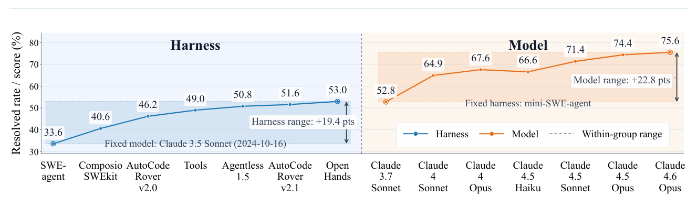
Figure 1: Comparing fixed-model and fixed-harness settings on SWE-bench Verified. Results are collected from the leaderboard.
ISE Research Measuring Harness Effects in Software Engineering Agents
ISE Research 软件工程智能体中的 Harness 效应度量
resentative SE tasks that broadly cover the SE lifecycle: issue repair on SWE-bench Pro [11], repository-level code generation on ProgramBench [57], and repository- centric real-world task solving on GitTaskBench [31]. We study these tasks under two contrasting harness con- figurations: mini-SWE-agent [56], a lightweight harness with basic command-line interaction capabilities, and OpenCode [2], a product-level harness with a more com- plex design. We pair these harnesses with two model families, Qwen [54] and DeepSeek [26], selecting five representative models from each family. Overall, this design yields 60 experimental configurations (3 tasks × 2 harnesses × 10 models), enabling a systematic analysis of how models, harnesses, and tasks jointly shape agent performance.
的 SE 任务上评估智能体，这些任务大体覆盖 SE 生命周期：SWE-bench Pro [11] 上的 issue 修复、ProgramBench [57] 上的仓库级代码生成，以及 GitTaskBench [31] 上以仓库为中心的真实任务求解。我们在两种反差鲜明的 harness 配置下研究上述任务：其一是 mini-SWE-agent [56]，具备基础命令行交互能力的轻量级 harness；其二是 OpenCode [2]，设计更为复杂的产品级 harness。两者分别搭配 Qwen [54] 与 DeepSeek [26] 两个模型家族，并从每个家族中选取五个代表性模型。整体设计共产生 60 种实验配置（3 个任务 × 2 个 harness × 10 个模型），支持对模型、harness 与任务联合作用的系统分析。
complexity.
复杂性。
Second, our component and trajectory analyses show that harness gains come less from adding more scaffold- ing or spending more tokens, and more from regulating how agents explore and act in repositories. Structured tool use and task-specific subagents provide the most stable improvements, while context compression and generic subagents can hurt repository-generation perfor- mance. NanoHarness improves over mini-SWE-agent by 7.37 and 6.21 percentage points on Qwen3.7-Max and DeepSeek-V4-Pro, respectively, and closes most of the gap to product-level harnesses with only controlled prompt growth. These results suggest that effective har- nesses improve SE agents by turning raw exploration into structured, task-aligned interaction rather than by increasing model capability alone.
其次，组件与轨迹分析表明，harness 收益主要不是靠堆叠更多脚手架或消耗更多 token，而是源于规范智能体在仓库中探索与行动的方式。结构化工具使用与任务特定子智能体带来最稳定的改进；上下文压缩与通用子智能体则可能损害仓库生成性能。NanoHarness 在 Qwen3.7-Max 与 DeepSeek-V4-Pro 上分别较 mini-SWE-agent 提升 7.37 和 6.21 个百分点，仅以受控的 prompt 增长便弥合了与产品级 harness 的大部分差距。这些结果表明，有效的 harness 之所以能改进 SE 智能体，关键在于把粗放的探索转化为结构化、与任务对齐的交互，而非单纯提升模型能力。
For the second perspective, we follow commercial har- ness designs (e.g., Claude Code [3] and Codex [33]) to identify five core components of modern harness architec- tures, and implement each component in a minimal form. Starting from mini-SWE-agent, we incrementally add these plug-and-play components to the existing harness in a building-block manner, creating a controlled harness variant called NanoHarness for component-level analy- sis. Using ProgramBench as the testbed, we evaluate both the isolated effect of each component and the combined effect of integrating all components. In addition, we collect and analyze both the performance and execution behavior of NanoHarness and its variants, and further conduct trajectory-level analysis.
针对第二个视角，我们参照商业 harness 设计（如 Claude Code [3] 与 Codex [33]）提炼出现代 harness 架构的五个核心组件，并以最小形式逐一实现。从 mini-SWE-agent 出发，我们以搭积木的方式向既有 harness 逐步添加这些即插即用组件，得到用于组件级分析的受控 harness 变体 NanoHarness。我们以 ProgramBench 为测试平台，既评估各组件的单独效应，也评估全部组件集成的组合效应；同时收集并分析 NanoHarness 及其变体的性能与执行行为，进一步开展轨迹级分析。
This paper makes the following contributions: (1) Large- scale Empirical Study. We conduct a systematic empiri- cal study across three representative benchmarks, using 10 different LLMs from Qwen and DeepSeek, with over 10B (Qwen) and 20B (DeepSeek) prompt tokens. (2) Component-Level Decomposition. We decompose mod- ern SE-agent harnesses into representative components and build NanoHarness, a lightweight modular harness that enables controlled component-level analysis. (3) Behavioral Insight. We reveal how harness mechanisms affect performance and execution behavior, showing that effective harnesses improve SE-agent performance mainly by enabling structured tool use and better-regulated ex- ploration rather than by model improvement alone.
本文贡献如下：(1) 大规模实证研究。我们在三个代表性基准上开展系统实证，使用来自 Qwen 与 DeepSeek 的 10 个不同 LLM，prompt token 总量分别超过 10B（Qwen）与 20B（DeepSeek）。(2) 组件级分解。我们将现代 SE 智能体 harness 分解为若干代表性组件，并构建支持受控组件级分析的轻量级模块化 harness NanoHarness。(3) 行为层面洞察。我们揭示 harness 机制如何影响性能与执行行为，表明有效的 harness 主要通过结构化工具使用与更有序的探索改进 SE 智能体性能，而非仅靠模型本身的改进。
Experimental results show that harness design substan- tially shapes SE-agent performance, but its effect is neither uniform nor monotonic. First, harnesses play different roles under different task regimes. On SWE-style issue repair, where workflows are relatively fixed and edits are often localized, complex harnesses mainly compensate for weaker models, and their marginal benefit decreases as model capability improves. In contrast, on newer and more open-ended repository-level tasks such as Program- Bench and GitTaskBench, complex harnesses behave more like capability amplifiers: only sufficiently capa- ble models can reliably exploit the additional workflow
实验结果表明，harness 设计显著影响 SE 智能体性能，但其效应既不均匀也不单调。其一，harness 在不同任务机制下角色各异。SWE 风格的 issue 修复工作流相对固定、代码修改多局限于局部，此时复杂 harness 主要用于弥补较弱模型的不足，边际收益随模型能力提升而递减。相比之下，在 ProgramBench 与 GitTaskBench 这类更新、更开放式的仓库级任务上，复杂 harness 更像能力放大器：唯有能力足够的模型方能可靠地利用额外的工作流
2Preliminaries2 预备知识
In this section, we briefly introduce the architecture and main components of the modern harness design.
本节简要介绍现代 harness 设计的架构与主要组件。
2.1Architecture2.1 架构
As shown in Figure 2, we present a general architecture of modern agent harnesses. The harness is organized around
如图 2 所示，我们给出现代 agent harness 的总体架构。该 harness 围绕
2
2
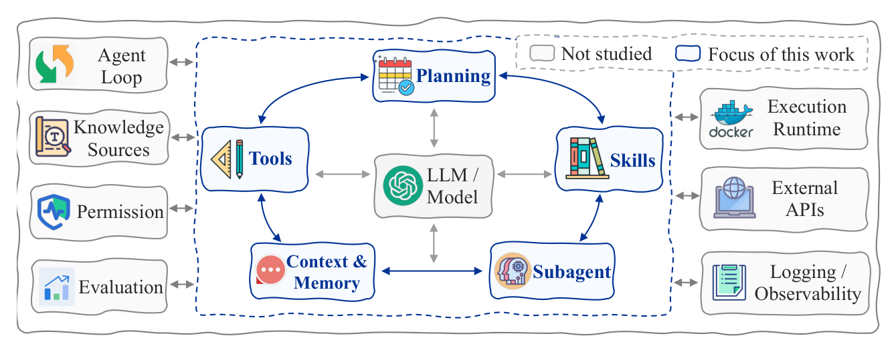
Figure 2: The general architecture of modern agent harnesses.
the model, and we decompose it into 12 modules [30, 68]. The modules highlighted in blue are the focus of this work, as they represent the fundamental capabilities of a harness and have a direct impact on agent performance. The gray modules include supporting components such as envi- ronment, permission, logging, observability, knowledge sources, and evaluation. Although these modules are also indispensable parts of a complete agent system, they usually play more engineering-oriented roles or serve as external constraints across different harnesses. Therefore, we do not discuss their internal mechanisms in detail. Next, we introduce the five core modules of the harness.
模型展开，并将其分解为 12 个模块 [30, 68]。蓝色高亮的模块是本文的研究重点：它们构成 harness 的基础能力，直接影响智能体性能。灰色模块则为支撑性组件，包括环境、权限、日志、可观测性、知识源与评估等。这些模块虽是完整智能体系统不可或缺的部分，但通常承担偏工程的角色，或在不同 harness 之间充当外部约束，故本文不深入讨论其内部机制。下面依次介绍 harness 的五个核心模块。
2.2.4Subagents2.2.4 子智能体
Subagents delegate parts of a task to specialized roles or execution flows, such as localization, implementation, or verification. This can improve decomposition but also adds coordination and communication overhead.
子智能体将任务的一部分委托给专门角色或执行流程，如定位、实现或验证。这有助于改善任务分解，但会引入协调与通信开销。
2.2.5Skills2.2.5 技能
Skills encode reusable high-level workflows such as de- bugging, validation, or recovery from failed attempts. They reduce repetitive decision-making when the proce- dure is relevant to the current task.
技能将可复用的高层工作流（如调试、验证或从失败尝试中恢复）编码沉淀。当相关流程适用于当前任务时，可减少重复决策。
2.2Components2.2 组件
3Study on SE Agent Harness3 SE 智能体 Harness 研究
2.2.1Tools2.2.1 工具
3.1Overall Study Design3.1 总体研究设计
Tools expose external actions such as file inspection, edit- ing, search, shell execution, and testing. Their interface determines what repository state the model can observe and how safely it can act on that state.
工具对外暴露文件检查、编辑、搜索、shell 执行与测试等外部动作。其接口决定了模型能够观察到的仓库状态，以及在目标状态上行动的安全程度。
Overview. Figure 3 provides an overview of our empiri- cal study on SE agent harnesses. The study is organized into two complementary parts. First, we examine the joint effects of models, harnesses, and tasks by evaluat- ing models with different capability levels under both lightweight and product-level harnesses across SE tasks spanning the software development lifecycle. Second, we conduct a component-level analysis by incrementally adding core harness mechanisms, including tool registry, context compression, explicit planning, subagents, and lazy skills, to a minimal baseline harness. This design allows us to study not only how harnesses interact with model capability and task characteristics, but also how in- dividual components and their combinations affect agent performance, behavior, and efficiency.
概述。图 3 概括了本次 SE 智能体 harness 实证研究的全貌。研究分为互补的两部分：其一，在轻量级与产品级 harness 下、于覆盖软件开发生命周期的各 SE 任务上评估不同能力水平的模型，考察模型、harness 与任务的联合效应；其二，向最小基线 harness 逐步添加工具注册表、上下文压缩、显式规划、子智能体与惰性技能等核心机制，开展组件级分析。这一设计既能揭示 harness 与模型能力、任务特性之间的交互，也能刻画单个组件及其组合对智能体性能、行为与效率的影响。
2.2.2Context and Memory2.2.2 上下文与记忆
Context and memory determine what task information, observations, code snippets, outputs, and intermediate reasoning remain available during the agent loop. Effec- tive management preserves useful state while limiting irrelevant or redundant history.
上下文与记忆决定智能体循环中哪些任务信息、观察结果、代码片段、输出与中间推理持续可用。有效的管理在保留有用状态的同时抑制无关或冗余的历史。
2.2.3Planning2.2.3 规划
Planning helps the agent decompose a task, track inter- mediate goals, and decide subsequent actions. Harnesses may implement this through explicit plans, iterative re- planning, or lightweight action selection.
规划帮助智能体分解任务、跟踪中间目标并决定后续动作。Harness 可借助显式计划、迭代重规划或轻量级动作选择来实现这一功能。
Study 1: Measuring Joint Effects of Models, Har- nesses, and Tasks. SE research mainly follows three directions: improving coding-oriented models, designing agent harnesses, and building SE tasks and benchmarks.
研究 1：度量模型、Harness 与任务的联合效应。SE 研究主要沿三个方向展开：改进面向编码的模型、设计 agent harness、构建 SE 任务与基准。
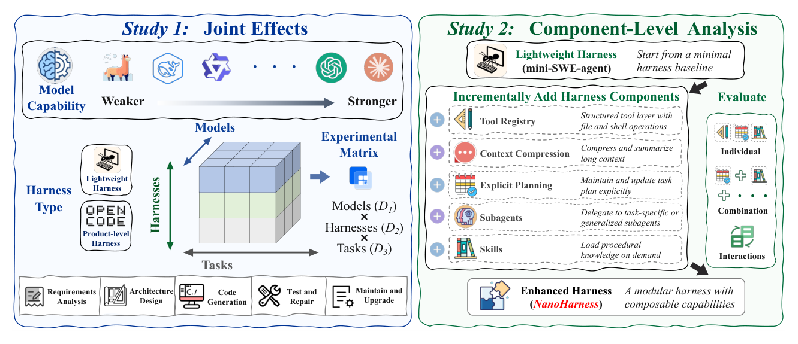
Figure 3: Overview of our agent harness study: (1) joint model–harness–task effects and (2) component-level harness analysis.
Model-oriented studies [39, 55, 59] train models through code pretraining, fine-tuning, reinforcement learning, or inference-time optimization. Harness-oriented stud- ies [7, 48, 52] improve how agents use repositories, tools, tests, and execution environments. Task-oriented and benchmark-oriented studies [38, 46] design realistic SE tasks and evaluation protocols. However, these directions are usually studied with separate focuses, leaving the joint effects of models, harnesses, and tasks underexplored.
面向模型的研究 [39, 55, 59] 借助代码预训练、微调、强化学习或推理时优化训练模型；面向 harness 的研究 [7, 48, 52] 改进智能体使用仓库、工具、测试与执行环境的方式；面向任务与基准的研究 [38, 46] 则设计贴近真实的 SE 任务与评估协议。然而，这三个方向大多各自为战，模型、harness 与任务的联合效应仍缺乏充分探究。
instantiate five representative mechanisms: tool registry, context compression, explicit planning, subagents, and lazy skills. This modular design allows us to evaluate their effects on SE tasks both individually and in combination, thereby analyzing how different harness mechanisms contribute to long-horizon performance beyond the choice of model alone.
实例化五个代表性机制：工具注册表、上下文压缩、显式规划、子智能体与惰性技能。这种模块化设计支持对它们在 SE 任务上的效应进行单独与组合评估，进而分析各 harness 机制如何在模型选择之外贡献长程性能。
Tool Registry. We extend the Bash interactive mode of mini-SWE-agent into a tool layer, implemented through a unified registry and native tool-calling mechanism. We introduce four file-system-oriented tools: read_file, write_file, edit_file, and glob. read_file provides bounded file inspection, write_file creates or overwrites files, edit_file applies localized textual modifications, and glob supports pattern-based file discovery.
工具注册表。我们将 mini-SWE-agent 的 Bash 交互模式扩展为一个工具层，通过统一注册表与原生 tool-calling 机制实现，并引入四个面向文件系统的工具：read_file、write_file、edit_file 与 glob。read_file 提供有界的文件检查，write_file 创建或覆盖文件，edit_file 执行局部文本修改，glob 支持按模式发现文件。
To examine these joint effects, we design our first study around the three factors. For models, we select multi- ple models from the same model family, ranging from weaker to stronger ones, so that performance differences can reflect changes in model scale and capability while reducing variation caused by model lineage. For har- nesses, we compare a lightweight basic harness with a more complex product-level harness, which allows us to measure how much the surrounding agent workflow changes SE task performance. For tasks, we choose benchmarks that cover different stages of the software de- velopment lifecycle, including requirements analysis [10], architecture design [66], coding [19], testing [29], and validation [13]. By combining these factors in a unified three-dimensional experimental matrix, we evaluate each model under each harness across each task, allowing us to compare their individual effects and analyze how they interact in LLM-based SE agents.
为考察上述联合效应，第一项研究围绕三个因素展开。模型方面，我们在同一模型家族内选取由弱到强的多个模型，使性能差异能够反映模型规模与能力的变化，同时控制模型谱系差异带来的扰动。Harness 方面，我们对比轻量级基础 harness 与更复杂的产品级 harness，以度量外围智能体工作流对 SE 任务性能的改变幅度。任务方面，我们选取覆盖软件开发生命周期各阶段的基准，包括需求分析 [10]、架构设计 [66]、编码 [19]、测试 [29] 与验证 [13]。三因素在统一的三维实验矩阵中组合，每个模型均在每种 harness、每个任务下得到评估，从而既能比较各因素的主效应，也能分析它们在基于 LLM 的 SE 智能体中的交互。
Context Compression. We implement a context com- pression module for long-horizon execution under limited context windows. Oversized tool outputs are persisted to the workspace, with only paths and short previews retained in the prompt. When history grows too long, the module applies message snipping and observation com- paction while preserving recent results and high-value outputs. If the context still exceeds the limit, it triggers LLM-based summarization to retain necessary informa- tion. Compaction can also be invoked manually or after context-window errors, with logs kept for auditing.
上下文压缩。我们为有限上下文窗口下的长程执行实现了一个上下文压缩模块：超长工具输出被持久化到工作区，prompt 中仅保留路径与简短预览；当历史过长时，模块在保留近期结果与高价值输出的前提下进行消息裁剪与观察压缩；若上下文仍超限，则触发基于 LLM 的摘要以保留必要信息。压缩亦可手动触发，或在上下文窗口错误发生后自动执行，全程保留日志以供审计。
Study 2: Component-Level Harness Analysis. The second study focuses on the internal design of the agent harness. As discussed in Section 2, modern SE agent harnesses can be decomposed into 12 components. To study the mechanisms behind representative components, we implement a modular harness called NanoHarness on top of mini-SWE-agent, where each mechanism can be enabled or disabled independently. Specifically, we
研究 2：组件级 Harness 分析。第二项研究聚焦 agent harness 的内部设计。如第 2 节所述，现代 SE 智能体 harness 可分解为 12 个组件。为探究代表性组件背后的机制，我们在 mini-SWE-agent 之上实现了模块化 harness NanoHarness，其中每个机制均可独立启用或禁用。具体而言，我们
Explicit Planning. The planning module adds a TodoWrite-style lightweight planning mechanism to the agent. When enabled, the agent can call todo_write to maintain a short task list, where at most one item may be marked as in_progress. Each update replaces the full todo list and is validated by TodoManager for item format, status values, list length, and planning consistency. The current plan is rendered back into the prompt and saved
显式规划。规划模块为智能体添加 TodoWrite 风格的轻量级规划机制。启用后，智能体可调用 todo_write 维护一份简短任务列表，其中至多一项可标记为 in_progress。每次更新都会整体替换 todo 列表，并由 TodoManager 校验条目格式、状态取值、列表长度与规划一致性。当前计划会渲染回 prompt 并保存
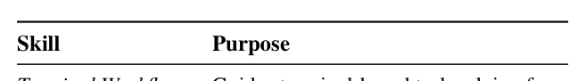
Table 1: Overview of lazily loaded skills.
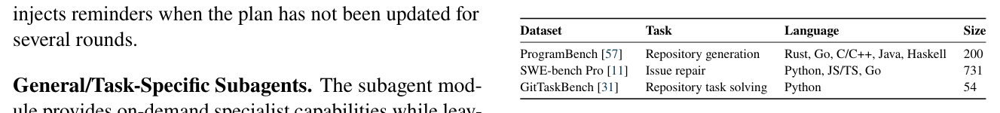
Table 2: Summary of datasets used in our experiments.
General/Task-Specific Subagents. The subagent mod- ule provides on-demand specialist capabilities while leav- ing task control, budget management, and final submis- sion to the parent agent. Each subagent runs with fresh history in the shared workspace, uses a restricted tool whitelist via SubagentRunner, and returns a structured report through finish_subagent. Nested delegation is disabled, and trajectories are logged for auditing and cost analysis.
通用/任务特定子智能体。子智能体模块按需提供专家能力，任务控制、预算管理与最终提交仍由父智能体掌控。每个子智能体在共享工作区中以全新历史运行，经 SubagentRunner 使用受限的工具白名单，并通过 finish_subagent 返回结构化报告。嵌套委托被禁用，全部轨迹均有记录，以供审计与成本分析。
3.2Research Questions3.2 研究问题
Based on our study objectives, we propose the following three research questions.
围绕研究目标，我们提出以下三个研究问题。
RQ1: What is the relationship among models, harnesses, and tasks?
RQ1：模型、Harness 与任务之间存在何种关系？
(1) General SE subagents. The first type consists of software-engineering subagents organized according to the software development lifecycle, including require- ment_analysis, architecture_design, code_generation, test_generation, and defect_repair. Each subagent is assigned an appropriate tool set and returns structured artifacts for the parent agent to integrate.
(1) 通用 SE 子智能体。第一类按软件开发生命周期组织，包括 requirement_analysis、architecture_design、code_generation、test_generation 与 defect_repair。每个子智能体配备相应的工具集，返回结构化产物，交由父智能体整合。
RQ1.1: How does harness performance scale with model capability? RQ1.2: How do harnesses vary across SE tasks?
RQ1.1：Harness 性能如何随模型能力扩展？RQ1.2：Harness 在不同 SE 任务之间表现有何差异？
RQ2: How do harness components affect SE agents?
RQ2：Harness 组件如何影响 SE 智能体？
RQ2.1: What is the individual effect of each com- ponent? RQ2.2: What is the combined effect of all compo- nents?
RQ2.1：各组件的单独效应如何？RQ2.2：全部组件的组合效应如何？
(2) Task-specific subagents. The second type consists of dedicated profiles for behavior analysis, differential testing, and submission review. These subagents support targeted exploration, validation, and final checking.
(2) 任务特定子智能体。第二类为行为分析、差分测试与提交评审配置专用子智能体，支持针对性探索、验证与最终检查。
RQ3: How do harness mechanisms affect agent execution behavior and efficiency?
RQ3：Harness 机制如何影响智能体的执行行为与效率？
Lazy Skills. The skills module reduces prompt over- head by treating procedural knowledge as lazily loaded, callable resources. When enabled, the prompt contains only a compact skill catalog, and the agent can invoke load_skill(name) to retrieve detailed guidance when needed. SkillLoader builds this catalog from metadata in configured SKILL.md files. Loaded skills are returned in a structured wrapper and support implementation, de- bugging, testing, fuzzing, and final review. The available skills are defined in Table 1.
惰性技能。技能模块将程序性知识视为可懒加载、可调用的资源，从而降低 prompt 开销。启用后，prompt 仅含一份紧凑的技能目录，智能体可在需要时调用 load_skill(name) 获取详细指引。SkillLoader 依据所配置 SKILL.md 文件中的元数据构建该目录；已加载的技能以结构化包装返回，覆盖实现、调试、测试、模糊测试与最终评审。可用技能定义见表 1。
RQ3.1: How do harness mechanisms change the agent’s tool use, context usage, and token usage? RQ3.2: How do harness mechanisms affect com- mon failure modes in long-horizon SE tasks?
RQ3.1：Harness 机制如何改变智能体的工具使用、上下文使用与 token 使用？RQ3.2：Harness 机制如何影响长程 SE 任务中的常见失败模式？
4Experimental Setup4 实验设置
4.1Tasks and Datasets4.1 任务与数据集
We evaluate harnesses on three complementary SE benchmarks (Table 2): ProgramBench [57], SWE-bench Pro [11], and GitTaskBench [31]. These datasets span key stages of the SE lifecycle, including requirement un- derstanding, architecture design, code generation, testing, and validation. This makes them suitable for assessing har- ness effectiveness under complex, long-horizon SE tasks. Specifically, ProgramBench targets repository-level code generation, SWE-bench Pro focuses on real-world issue repair, and GitTaskBench evaluates repository-centric task solving.
我们在三个互补的 SE 基准（表 2）上评估 harness：ProgramBench [57]、SWE-bench Pro [11] 与 GitTaskBench [31]。三者覆盖 SE 生命周期的关键阶段——需求理解、架构设计、代码生成、测试与验证，适合考察 harness 在复杂长程 SE 任务上的有效性。具体而言，ProgramBench 面向仓库级代码生成，SWE-bench Pro 聚焦真实世界的 issue 修复，GitTaskBench 则评估以仓库为中心的任务求解。
4.2Harness Selection4.2 Harness 选择
We select mini-SWE-agent [56] and OpenCode [2] as two representative harnesses. mini-SWE-agent serves as the minimal harness setting, offering a concise and basic agent workflow centered on command-line interaction.
我们选取 mini-SWE-agent [56] 与 OpenCode [2] 作为两个代表性 harness。mini-SWE-agent 代表最小化 harness 配置，提供以命令行交互为核心的简洁基础智能体工作流。
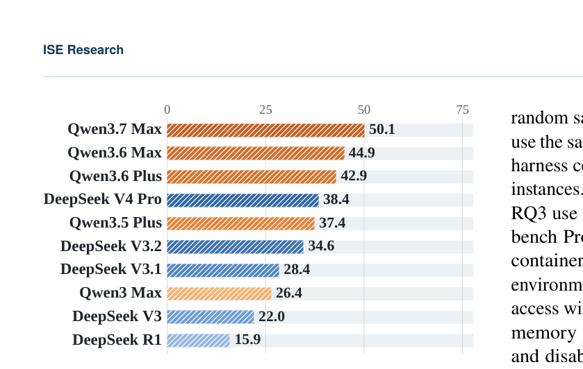
Figure 4: Model coding rankings based on the Coding Index.
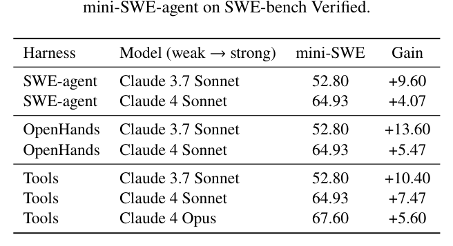
Table 3: Matched-model harness improvements over
random sample of 70 instances from ProgramBench. We use the same sampled instances across all matched model- harness configurations. RQ1.2 uses all 54 GitTaskBench instances. The component-level experiments in RQ2 and RQ3 use the full 200-instance ProgramBench set. SWE- bench Pro and ProgramBench are evaluated in Docker containers, while GitTaskBench is evaluated in a local environment. For containerized tasks, we disable network access with –network none, allocate 20 CPUs and 60 GB memory per container, set a 7-hour container lifetime, and disable SYS_PTRACE. For GitTaskBench, we isolate the working directory and block operations outside the workspace. For NanoHarness, we set the maximum number of subagent rounds to 50 and limit the planning module to at most 10 todo items. Context compression is enabled with a 350K-token budget, and the most recent 20 messages are preserved when compression is triggered.
的来自 ProgramBench 的 70 个实例随机样本，并在所有匹配的模型-harness 配置中使用相同的抽样实例；RQ1.2 使用全部 54 个 GitTaskBench 实例；RQ2 与 RQ3 的组件级实验则使用完整的 200 实例 ProgramBench 集。SWE-bench Pro 与 ProgramBench 在 Docker 容器中评估，GitTaskBench 在本地环境中评估。容器化任务以 –network none 禁用网络访问，每个容器分配 20 个 CPU 与 60 GB 内存，容器生存期设为 7 小时，并禁用 SYS_PTRACE。GitTaskBench 则隔离工作目录，阻止工作区之外的一切操作。对于 NanoHarness，子智能体最大轮数设为 50，规划模块限制为最多 10 个 todo 项；上下文压缩以 350K-token 预算启用，触发压缩时保留最近 20 条消息。
It represents a lightweight harness with limited model- external support. OpenCode, in contrast, represents a product-level harness with a more complex design and multiple integrated components for repository interaction, tool use, context handling, and task execution. This con- trast enables us to study how harness design complexity influences performance across different models and SE tasks.
它代表模型外部支持有限的轻量级 harness；OpenCode 则代表产品级 harness，设计更复杂，集成了仓库交互、工具使用、上下文处理与任务执行等多个组件。通过这一对比，我们得以考察 harness 设计复杂度如何影响不同模型与不同 SE 任务下的性能。
5Results and Analysis5 结果与分析
5.1RQ1: Relationship Among Models, Harnesses, and Tasks5.1 RQ1：模型、Harness 与任务之间的关系
4.3Model Selection4.3 模型选择
5.1.1RQ1.1-Scaling of Harness Performance with Model Capability5.1.1 RQ1.1——Harness 性能随模型能力的扩展
We focus on open-weight model families to support re- producible evaluation and controlled comparisons across models with different capability levels but similar lineage. Therefore, instead of using closed-weight models (e.g., GPT, Claude), we select two widely used open-weight model families, Qwen [6, 54] and DeepSeek [26], and choose five models from each family. We rank the mod- els by strength based on the official scores provided by the Coding Index [5] (Figure 4). This selection and ranking provide an overview of the models’ coding capa- bilities and facilitate comparisons between stronger and weaker models. Here, DeepSeek-R1 refers to the original DeepSeek-R1 release, rather than the later DeepSeek-R1- 0528 update, while DeepSeek-V3 refers to DeepSeek-V3- 0324. All models are evaluated in non-thinking mode.
为支持可复现评估，并对能力不同而谱系相近的模型进行受控比较，我们聚焦开源权重模型家族：不选用闭源权重模型（如 GPT、Claude），而是选取两个广泛使用的开源权重家族 Qwen [6, 54] 与 DeepSeek [26]，各取五个模型。模型强弱依据 Coding Index [5] 的官方分数排序（图 4）。这一选择与排序概览了各模型的编码能力，便于强弱模型间的对照。需要说明的是，DeepSeek-R1 指最初的 DeepSeek-R1 版本而非后续的 DeepSeek-R1-0528 更新，DeepSeek-V3 指 DeepSeek-V3-0324；所有模型均在非思考模式下评估。
To study how harness-induced gains scale with model capability, we first analyze matched-model results from the SWE-bench Verified [20] leaderboard. As shown in Table 3, more advanced harnesses provide larger improve- ments over mini-SWE-agent for weaker models, while the margin becomes smaller for stronger models. For example, the gain of OpenHands decreases from +13.60 pp with Claude 3.7 Sonnet to +5.47 pp with Claude 4 Sonnet, and the gain of SWE-agent decreases from +9.60 pp to +4.07 pp under the same model progression.
为考察 harness 收益如何随模型能力扩展，我们首先分析 SWE-bench Verified [20] 排行榜上固定模型的结果。如表 3 所示，模型越弱，先进 harness 相对 mini-SWE-agent 的改进越大；模型越强，差距越小。例如，OpenHands 的收益从 Claude 3.7 Sonnet 的 +13.60 pp 降至 Claude 4 Sonnet 的 +5.47 pp；同样随模型演进，SWE-agent 的收益从 +9.60 pp 降至 +4.07 pp。
This suggests that harness complexity can substantially improve weaker or mid-level models, but its marginal benefit may be compressed as model capability increases.
这表明 harness 复杂性能显著改进较弱或中等水平的模型，但其边际收益可能随模型能力提升而收窄。
4.4Implementations4.4 实现
We use a unified execution protocol across all experiments. For model inference, we set the temperature to 0.0 for all models to reduce randomness. For SWE-bench Pro and GitTaskBench, we follow the original evaluation settings and limit each task to 250 agent steps. For ProgramBench, we reduce the step limit from the original 1,000 steps to 300 steps to reduce evaluation cost. Each task is also subject to a 6-hour wall-clock limit and a 3- minute timeout for each command execution. To control evaluation cost in RQ1, we use random subsets for the larger benchmarks: RQ1.1 uses a random sample of 300 instances from SWE-bench Pro, and RQ1.2 uses a
所有实验采用统一的执行协议。模型推理方面，所有模型的温度均设为 0.0 以降低随机性。SWE-bench Pro 与 GitTaskBench 遵循原始评估设置，每个任务限制为 250 个智能体步骤；ProgramBench 为控制评估成本，将步数上限由原来的 1,000 步降至 300 步。每个任务还受 6 小时挂钟时限与单条命令 3 分钟超时的双重约束。为进一步控制 RQ1 的评估成本，较大规模基准均使用随机子集：RQ1.1 从 SWE-bench Pro 随机抽取 300 个实例，RQ1.2 使用一
Our controlled experiments on a random 300-instance sample from SWE-bench Pro [11] further support this
我们在来自 SWE-bench Pro [11] 的随机 300 实例样本上开展的受控实验进一步支持了这
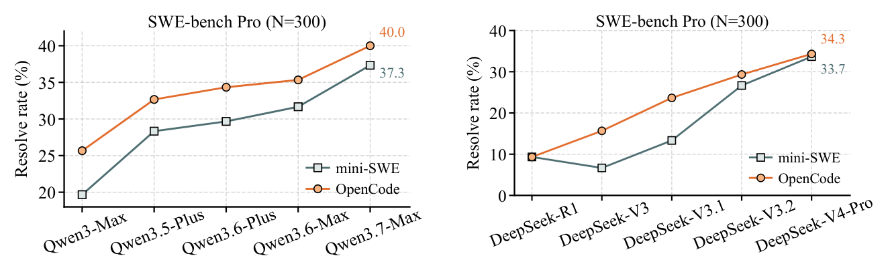
Figure 5: Qwen-model scaling comparison between different
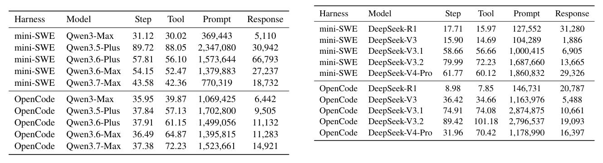
Table 4: Average sample-level statistics of Qwen models.
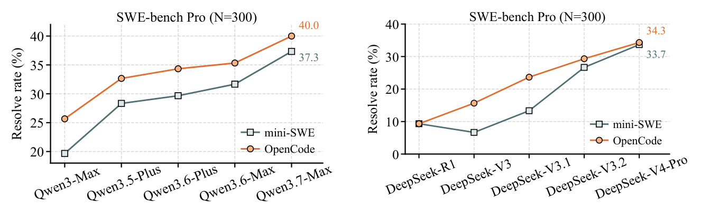
Figure 6: DeepSeek-model scaling comparison between
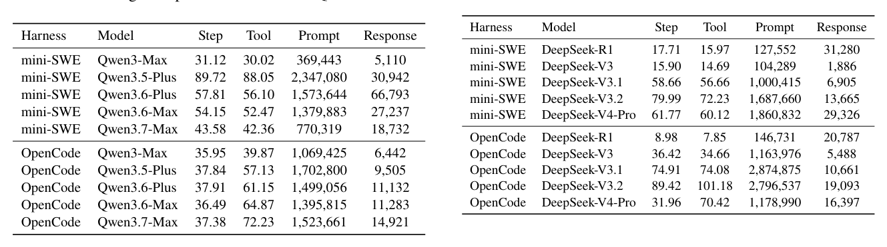
Table 5: Average sample-level statistics of DeepSeek models.表 5 进一步显示，OpenCode 对 DeepSeek 执行行为的改变远比对 Qwen 激进。在 DeepSeek-V3.1 与 DeepSeek-V3.2 上，OpenCode 的步数、工具调用与 prompt token 均远超 mini-SWE-agent，说明其探索范围更广、对产品级工作流的使用更重；而到了 DeepSeek-V4-Pro，OpenCode 步数反而少于 mini-SWE-agent，每步工具调用却更多。可见，最强的 DeepSeek 模型能以更紧凑、更依赖工具的方式与 OpenCode 交互，但由此获得的相对 mini-SWE-agent 的性能收益已微乎其微。
OpenCode brings little improvement for DeepSeek-R1, larger gains for intermediate models such as DeepSeek-V3 and DeepSeek-V3.1, and then converges with mini-SWE- agent again for DeepSeek-V4-Pro, where the final scores are 34.3 for OpenCode and 33.7 for mini-SWE-agent. This non-monotonic pattern suggests a threshold effect: models that are too weak may not reliably exploit a com- plex harness, while sufficiently strong models can solve many instances even with a lightweight harness, reducing the marginal benefit of additional harness mechanisms.
OpenCode 对 DeepSeek-R1 的改进甚微，对 DeepSeek-V3 与 DeepSeek-V3.1 等中间模型收益可观，而到 DeepSeek-V4-Pro 又与 mini-SWE-agent 重新收敛：最终得分 OpenCode 为 34.3，mini-SWE-agent 为 33.7。这一非单调模式提示存在阈值效应——过弱的模型难以可靠驾驭复杂 harness，足够强的模型则凭借轻量级 harness 也能解决大量实例，额外 harness 机制的边际收益因此被削弱。
trend, but also reveal that the scaling pattern differs across model families. For the Qwen family, the effect is relatively smooth. As model capability increases from Qwen3-Max to Qwen3.7-Max, both mini-SWE-agent and OpenCode improve, while the performance gap between them gradually narrows. Specifically, the OpenCode advantage decreases from about 6 pp for Qwen3-Max to 2.67 pp for Qwen3.7-Max, indicating that stronger Qwen models rely less on the additional scaffolding provided by the product-level harness.
趋势，但不同模型家族的扩展模式并不一致。Qwen 家族呈现相对平滑的效应：随着模型能力由 Qwen3-Max 提升至 Qwen3.7-Max，mini-SWE-agent 与 OpenCode 同步改进，两者差距逐渐收窄——OpenCode 的优势从 Qwen3-Max 的约 6 pp 缩小至 Qwen3.7-Max 的 2.67 pp，表明更强的 Qwen 模型对产品级 harness 额外脚手架的依赖更低。
The trajectory statistics in Table 4 provide further evidence for this interpretation. OpenCode keeps the number of agent steps relatively stable across Qwen models, while its number of tool calls increases from 39.87 to 72.23. This suggests that stronger Qwen models can use OpenCode to perform denser tool-assisted exploration within a similar number of decision steps. In contrast, mini-SWE-agent is constrained to roughly one tool call per step, and its step count and token usage first increase and then decrease as model capability improves. This indicates that stronger Qwen models gradually become more selective under the lightweight harness, focusing on fewer but more useful interactions.
表 4 的轨迹统计为上述解释提供了进一步证据。OpenCode 在各 Qwen 模型上保持智能体步数相对稳定，工具调用次数却从 39.87 增至 72.23——更强的 Qwen 模型能够借助 OpenCode 在相近的决策步数内完成更密集的工具辅助探索。相比之下，mini-SWE-agent 每步仅限约一次工具调用，其步数与 token 用量随模型能力提升先增后降，说明更强的 Qwen 模型在轻量级 harness 下渐趋挑剔，聚焦更少但更有价值的交互。
Answer to RQ1.1: (1) The marginal benefit of com- plex harnesses generally decreases as model capabil- ity improves: on SWE-bench Verified, matched-model gains over mini-SWE-agent drop from +9.60/+13.60 pp
RQ1.1 的回答：(1) 复杂 harness 的边际收益总体上随模型能力提升而下降：在 SWE-bench Verified 上，相对 mini-SWE-agent 的固定模型收益从 +9.60/+13.60 pp
DeepSeek exhibits a different scaling pattern, as shown in Figure 6. Unlike Qwen, the harness gain does not decrease smoothly across the whole model sequence.
如图 6 所示，DeepSeek 呈现不同的扩展模式：与 Qwen 不同，其 harness 收益并未在整个模型序列上平滑下降。
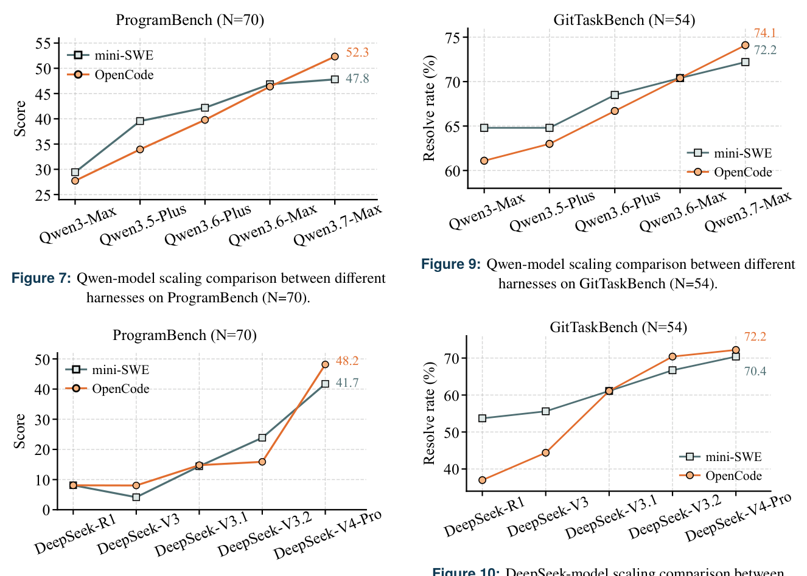
Figure 7: Qwen-model scaling comparison between different
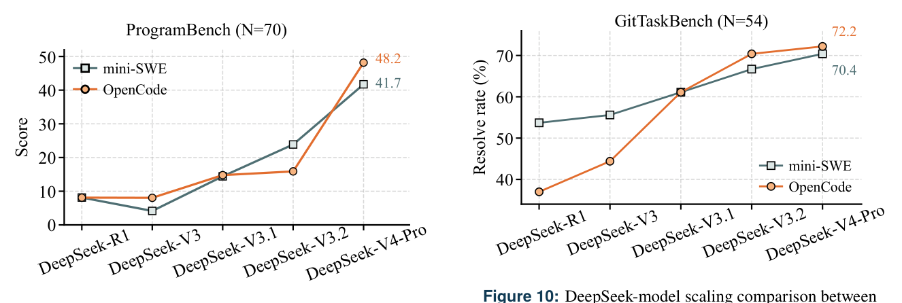
Figure 8: DeepSeek-model scaling comparison between
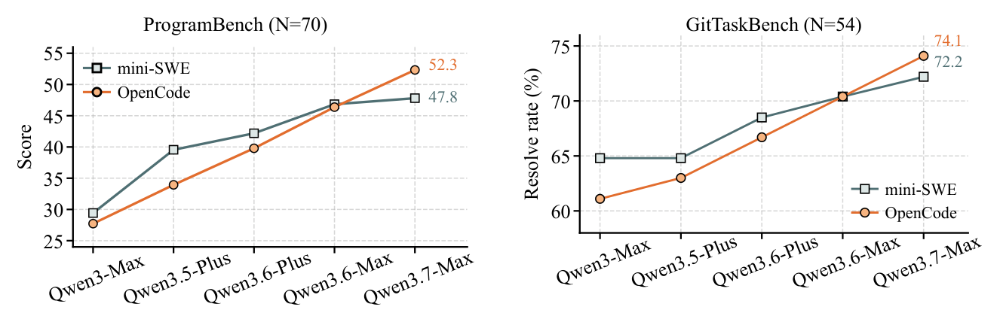
Figure 9: Qwen-model scaling comparison between different
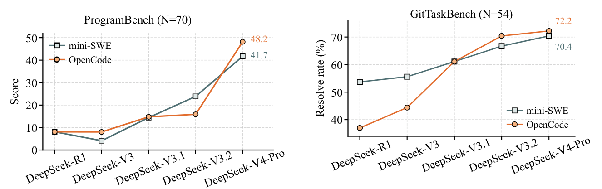
Figure 10: DeepSeek-model scaling comparison between
can consistently leverage the complex harness to com- plete tasks more effectively. On GitTaskBench (Figures 9 and 10), we also observe a similar phenomenon: Qwen3.6- Max and DeepSeek-V3.1 are the respective turning points within their model families at which models begin to leverage a complex harness such as OpenCode.
方能持续借助复杂 harness 更有效地完成任务。GitTaskBench（图 9 与图 10）上亦呈现类似现象：Qwen3.6-Max 与 DeepSeek-V3.1 分别是两个模型家族中模型开始驾驭 OpenCode 等复杂 harness 的转折点。
to +4.07/+5.47 pp, and in Qwen SWE-bench Pro experi- ments the OpenCode–mini-SWE gap narrows from 6.00 pp to 2.67 pp. (2) This convergence is not uniform across model families. Qwen follows a smooth narrow- ing trend, whereas DeepSeek shows a non-monotonic pattern, with OpenCode helping more on intermedi- ate models (e.g., DeepSeek-V3.1, DeepSeek-V3.2) and nearly converging with mini-SWE on DeepSeek-V4- Pro (34.3% vs. 33.7%).
降至 +4.07/+5.47 pp；在 Qwen 的 SWE-bench Pro 实验中，OpenCode 与 mini-SWE 的差距由 6.00 pp 缩小到 2.67 pp。(2) 这种收敛并不跨家族一致：Qwen 呈平滑收窄趋势，DeepSeek 则非单调——OpenCode 对中间模型（如 DeepSeek-V3.1、DeepSeek-V3.2）帮助更大，而在 DeepSeek-V4-Pro 上与 mini-SWE 几乎持平（34.3% 对 33.7%）。
The above results indicate that model capability is not the only factor affecting the effectiveness of a harness; task type and difficulty are also important factors. Compared with ProgramBench and GitTaskBench, SWE-bench Pro has a relatively fixed workflow, and code modifications typically involve only functions in a small number of files. In contrast, ProgramBench is a repository-generation task from scratch, often requiring the model to generate tens of thousands of lines of code while covering fine- grained functionality. The difficulty of GitTaskBench lies in its task flexibility: it involves multiple objectives and requires the model to independently understand the task goal, leverage repository information, and design an execution workflow. In addition, given the growing industry attention to SWE-style tasks in recent years, models may have received task-specific training, which could make them inherently stronger on this type of task and thereby reduce their dependence on the harness.
上述结果表明，模型能力并非影响 harness 有效性的唯一因素，任务类型与难度同样关键。与 ProgramBench、GitTaskBench 相比，SWE-bench Pro 工作流相对固定，代码修改通常仅涉及少数文件中的函数；ProgramBench 则是从零构建的仓库生成任务，模型往往要生成数万行代码并覆盖细粒度功能；GitTaskBench 的难点在于任务灵活性——目标多元，要求模型自主理解任务目标、利用仓库信息并设计执行工作流。此外，近年业界对 SWE 风格任务的关注持续升温，模型可能接受过相关任务的针对性训练，在这类任务上先天地更强，对 harness 的依赖随之降低。
5.1.2RQ1.2-Harness Performance on Different SE Tasks.5.1.2 RQ1.2——Harness 在不同 SE 任务上的表现
To verify whether the findings from RQ1.1 are gener- ally applicable, in RQ1.2 we select ProgramBench and GitTaskBench and conduct experiments using the same configuration as RQ1.1. We randomly sample 70 of the 200 instances from ProgramBench, including 20 easy, 21 medium, and 29 hard instances, and use all 54 instances from GitTaskBench.
为检验 RQ1.1 的发现是否具有普遍性，RQ1.2 选取 ProgramBench 与 GitTaskBench，沿用 RQ1.1 的配置开展实验：从 ProgramBench 的 200 个实例中随机抽取 70 个（简单 20、中等 21、困难 29），并使用 GitTaskBench 全部 54 个实例。
As shown in Figures 7 and 8, we find that on Program- Bench, OpenCode does not bring greater improvements to weaker models than mini-SWE-agent. Only the lat- est models (e.g., Qwen3.7-Max and DeepSeek-V4-Pro)
如图 7 与图 8 所示，在 ProgramBench 上，OpenCode 并未为较弱模型带来超过 mini-SWE-agent 的改进；唯有最新模型（如 Qwen3.7-Max 与 DeepSeek-V4-Pro）

Figure 11: Effect of different harness components on
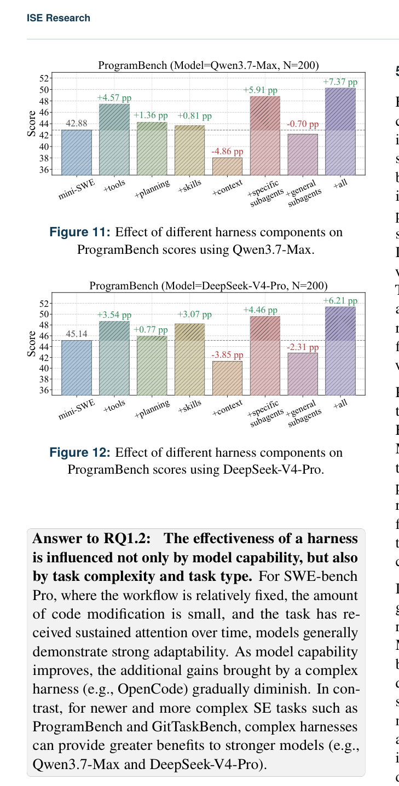
Figure 12: Effect of different harness components on
5.2.1RQ2.1-Individual Effect5.2.1 RQ2.1——单独效应
Figures 11 and 12 show that different harness components contribute unevenly to agent performance. Among the individual components, the tool registry and task-specific subagents bring the most consistent improvements across both models. For Qwen3.7-Max, adding the tool registry improves the ProgramBench score by 4.57 percentage points, while task-specific subagents bring the largest single-component gain of 5.91 percentage points. For DeepSeek-V4-Pro, the same two components also pro- vide strong gains of 3.54 and 4.46 points, respectively. These results suggest that structured repository operations and task-oriented delegation are particularly useful for repository-generation tasks, where agents must inspect files, create or modify multiple modules, and repeatedly validate implementation behavior.
图 11 与图 12 显示，各 harness 组件对性能的贡献并不均衡。单独组件中，工具注册表与任务特定子智能体在两个模型上的改进最为一致：对 Qwen3.7-Max，工具注册表使 ProgramBench 分数提升 4.57 个百分点，任务特定子智能体则以 5.91 个百分点创下最大单组件收益；对 DeepSeek-V4-Pro，这两个组件亦分别带来 3.54 与 4.46 分的显著增益。这表明结构化仓库操作与面向任务的委托对仓库生成任务尤为有效——此类任务要求智能体检查文件、创建或修改多个模块，并反复验证实现行为。
Planning and lazy skills also improve performance, but their effects are more moderate and model-dependent. Explicit planning yields small gains for both Qwen3.7- Max and DeepSeek-V4-Pro, indicating that lightweight task lists can help organize long-horizon execution, but planning alone is insufficient to substantially improve repository generation. Lazy skills show a larger benefit for DeepSeek-V4-Pro than for Qwen3.7-Max, suggesting that procedural guidance is more helpful when the model can effectively decide when and how to invoke it.
规划与惰性技能同样能提升性能，但幅度温和且依赖模型。显式规划对 Qwen3.7-Max 与 DeepSeek-V4-Pro 均有小幅收益，说明轻量级任务列表有助于组织长程执行，但单靠规划难以大幅改进仓库生成。惰性技能对 DeepSeek-V4-Pro 的收益大于 Qwen3.7-Max，暗示程序性指引只有在模型能够有效判断调用时机与方式时才能充分发挥作用。
In contrast, context compression and general subagents de- grade performance for both models. Context compression reduces the score by 4.86 percentage points for Qwen3.7- Max and 3.85 percentage points for DeepSeek-V4-Pro, because ProgramBench requires preserving detailed re- quirements, interface constraints, and implementation states over long trajectories. Aggressive compression may remove information that is still useful for later coding and debugging. General subagents also underperform, indicating that generic SE delegation may introduce coor- dination overhead or produce artifacts that are not directly aligned with the fine-grained requirements of repository generation.
与之相反，上下文压缩与通用子智能体均损害两个模型的性能。上下文压缩使 Qwen3.7-Max 分数下降 4.86 个百分点、DeepSeek-V4-Pro 下降 3.85 个百分点——ProgramBench 要求在长轨迹中保留详细需求、接口约束与实现状态，过度激进的压缩可能丢弃后续编码与调试仍然需要的信息。通用子智能体同样表现不佳，说明泛化的 SE 委托可能引入协调开销，或产出的产物难以对齐仓库生成的细粒度要求。
5.2 RQ2: Component-Level Effect Analy- sis
5.2 RQ2：组件级效应分析
Answer to RQ2.1: Individual harness components have heterogeneous effects. Tool registry and task- specific subagents provide the most stable and sub- stantial gains, planning and lazy skills offer smaller or model-dependent improvements, while context com- pression and general subagents can hurt performance on repository-generation tasks.
RQ2.1 的回答：各 harness 组件的效应差异显著。工具注册表与任务特定子智能体收益最稳定、最可观；规划与惰性技能改进较小或依赖模型；上下文压缩与通用子智能体则可能损害仓库生成任务性能。
In RQ1, we treat the harness as a whole and analyze its performance across different SE tasks. Although the results show that complex harnesses (e.g., OpenCode) can improve performance compared with basic harnesses (e.g., mini-SWE-agent), the sources of these improve- ments remain unclear. Therefore, in RQ2, we decompose and combine representative components of the harness to construct the lightweight and modular NanoHarness. We then conduct ablation experiments on the full Pro- gramBench set with NanoHarness, using two advanced LLMs, Qwen3.7-Max and DeepSeek-V4-Pro.
RQ1 将 harness 视为整体，分析其在不同 SE 任务上的性能。结果虽表明复杂 harness（如 OpenCode）优于基础 harness（如 mini-SWE-agent），但改进的来源仍不明晰。为此，RQ2 分解并重组 harness 的代表性组件，构建轻量级模块化的 NanoHarness，进而以 Qwen3.7-Max 与 DeepSeek-V4-Pro 两个先进 LLM 在完整 ProgramBench 集上开展消融实验。
5.2.2RQ2.2-Combined Effect5.2.2 RQ2.2——组合效应
When all components are combined, NanoHarness achieves the best performance among the variants for both models. For Qwen3.7-Max, the full configuration
全部组件组合后，NanoHarness 在两个模型的各变体中均取得最佳性能。对 Qwen3.7-Max 而言，完整配置
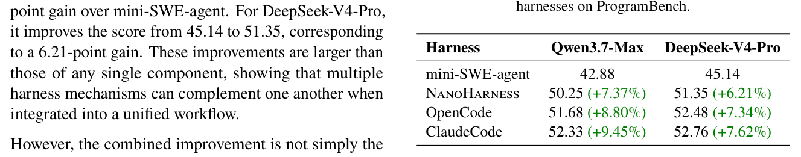
Table 6: Comparing NanoHarness with other product-level
However, the combined improvement is not simply the sum of all individual gains. Some components, such as context compression and general subagents, have negative effects in isolation, and their interaction with stronger components may introduce additional overhead. This indicates that harness components are not independent: their benefits depend on how they are coordinated within the agent loop. Nevertheless, the full NanoHarness configuration still consistently improves both models, suggesting that positive components such as structured tools, task-specific delegation, and procedural skills can dominate the overall effect when combined properly.
然而，组合改进并非各单独收益的简单加和。上下文压缩与通用子智能体等组件单独使用时呈负效应，与更强组件交互时还可能引入额外开销——harness 组件并非彼此独立，其收益取决于在智能体循环中的协调方式。尽管如此，完整 NanoHarness 配置仍稳定改进两个模型，说明结构化工具、任务特定委托与程序性技能等正向组件一旦组合得当，便足以主导整体效应。
cution trajectories to examine how harness components affect agent behavior. Specifically, RQ3.1 analyzes the differences in agent steps, tool calls, and token usage across different configurations of NanoHarness, while RQ3.2 measures the distribution patterns of probing be- havior and uses case studies to illustrate shifts in failure modes.
执行轨迹，以考察 harness 组件如何影响智能体行为。具体而言，RQ3.1 分析 NanoHarness 不同配置下智能体步数、工具调用与 token 使用的差异；RQ3.2 度量探测行为的分布模式，并以案例研究刻画失败模式的转变。
5.3.1RQ3.1-Effects on Tool Use, Context Usage, and Token Usage5.3.1 RQ3.1——对工具使用、上下文使用与 token 使用的影响
Compared with product-level harnesses, NanoHarness also achieves competitive performance while remaining lightweight and modular. On Qwen3.7-Max, NanoHar- ness reaches 50.25, reducing the gap to OpenCode (51.68) and Claude Code (52.33) to 1.43 and 2.08 percentage points, respectively. On DeepSeek-V4-Pro, NanoHar- ness achieves 51.35, which is also close to OpenCode (52.48) and Claude Code (52.76), with gaps of only 1.13 and 1.41 percentage points. These results show that al- though product-level harnesses still obtain the best scores, a lightweight modular harness composed of representative components can recover most of their performance gains. This suggests that the benefit of complex harnesses does not necessarily come from their full engineering stack; instead, a small set of carefully selected and coordinated components can account for a substantial portion of the improvement.
与产品级 harness 相比，NanoHarness 在保持轻量与模块化的同时亦取得了有竞争力的性能。Qwen3.7-Max 上，NanoHarness 达到 50.25，与 OpenCode（51.68）、Claude Code（52.33）的差距分别仅 1.43 与 2.08 个百分点；DeepSeek-V4-Pro 上，NanoHarness 达到 51.35，与 OpenCode（52.48）、Claude Code（52.76）的差距亦仅 1.13 与 1.41 个百分点。可见，尽管产品级 harness 仍居榜首，由代表性组件构成的轻量级模块化 harness 足以收复其大部分性能收益。这意味着复杂 harness 的收益未必源于其完整工程栈——一小组经过精心挑选与协调的组件即可贡献大部分改进。
Answer to RQ2.2: The full NanoHarness configu- ration achieves the strongest performance among vari- ants, improving over mini-SWE-agent on both models and outperforming any single component. Although NanoHarness still slightly trails product-level har- nesses such as OpenCode and Claude Code, it closes most of the gap with a lightweight modular design, suggesting that a compact set of representative compo- nents can reproduce much of the benefit of complex harnesses.
RQ2.2 的回答：完整 NanoHarness 配置在各变体中性能最强，在两个模型上既优于 mini-SWE-agent，也超过任何单一组件。尽管仍略逊于 OpenCode、Claude Code 等产品级 harness，NanoHarness 以轻量模块化设计弥合了大部分差距，表明一小组代表性组件即可再现复杂 harness 的大部分收益。
Answer to RQ3.1: Harness mechanisms affect execu- tion behavior in three main ways. Tools and subagents increase tool use, context compression reduces cost but may hurt performance, and the full NanoHarness con- figuration improves performance through more struc- tured interaction with controlled prompt growth.
RQ3.1 的回答：Harness 机制主要从三方面影响执行行为——工具与子智能体增加工具使用；上下文压缩降低成本但可能损害性能；完整 NanoHarness 配置则以更结构化的交互与受控的 prompt 增长改进性能。
5.3RQ3: Effects of Harness Mechanisms on Agent Behavior and Efficiency5.3 RQ3：Harness 机制对智能体行为与效率的影响
5.3.2RQ3.2-Effects on Failure Modes5.3.2 RQ3.2——对失败模式的影响
Through manual inspection of failed and low-scoring trajectories produced by mini-SWE-agent, we categorize failures by probing count and validation behavior and
通过人工检查 mini-SWE-agent 产生的失败与低分轨迹，我们按探测次数与验证行为对失败进行归类，并
In RQ3, we collect statistics on the performance and cost of each configuration in RQ2, and further analyze exe-
在 RQ3 中，我们收集 RQ2 各配置的性能与成本统计，并进一步分析执
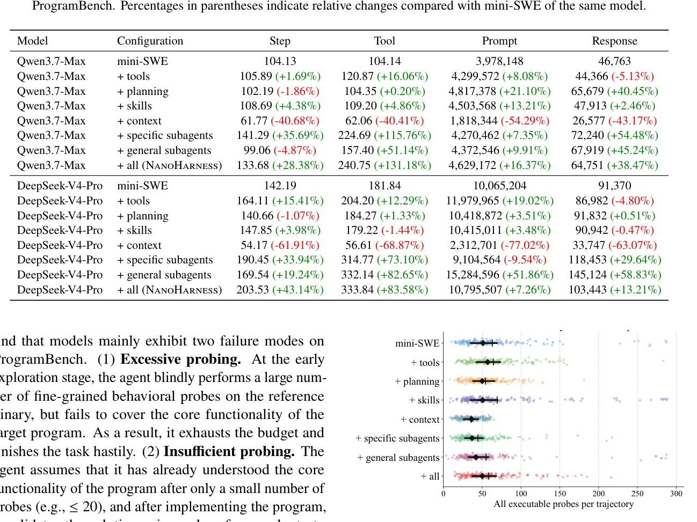
Table 7: Average sample-level statistics of Qwen3.7-Max and DeepSeek-V4-Pro with different harness components on表 7 呈现三种主要行为模式。其一，面向工具的机制加剧仓库交互：工具注册表适度提高工具调用次数，任务特定子智能体使 Qwen3.7-Max 与 DeepSeek-V4-Pro 的工具调用分别增加 115.76% 与 73.10%。鉴于任务特定子智能体提升性能而通用子智能体不然，额外的工具使用唯有面向任务时才有价值。其二，上下文压缩降低成本却损害性能：两个模型的 prompt token 分别削减 54.29% 与 77.02%，但 RQ2 中对应分数下降 4.86 与 3.85 个百分点，可见被压缩的历史可能丢失后续所需的需求或调试状态。其三，完整 NanoHarness 配置在受控 prompt 增长下改进性能：工具调用分别增加 131.18% 与 83.58%，prompt token 增幅却小得多（+16.37% 与 +7.26%），分数较 mini-SWE-agent 提高 7.37 与 6.21 个百分点——组合收益来自更结构化的交互，而非单纯追加 prompt 预算。
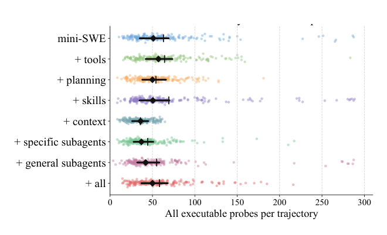
Figure 13: Distribution of probing times (Qwen3.7-Max).
find that models mainly exhibit two failure modes on ProgramBench. (1) Excessive probing. At the early exploration stage, the agent blindly performs a large num- ber of fine-grained behavioral probes on the reference binary, but fails to cover the core functionality of the target program. As a result, it exhausts the budget and finishes the task hastily. (2) Insufficient probing. The agent assumes that it has already understood the core functionality of the program after only a small number of probes (e.g., ≤20), and after implementing the program, it validates the solution using only a few smoke tests. As shown in Figure 13, we compare the distribution of probing times for Qwen3.7-Max under different harness configurations. We observe that the components with the largest performance gains, i.e., task-specific subagents, substantially reduce the tendency of mini-SWE-agent to perform either excessive or insufficient probing. Building on these improvements, NanoHarness further combines the strengths of different components. It not only reduces extreme probing behaviors, but also learns to use more probes to explore the target program behavior more com- prehensively, leading to a stable rightward shift in the overall distribution of probing counts.
发现模型在 ProgramBench 上主要呈现两种失败模式。(1) 过度探测。早期探索阶段，智能体对参考二进制盲目执行大量细粒度行为探测，却未能覆盖目标程序的核心功能，最终耗尽预算、草率收尾。(2) 探测不足。智能体仅经少量探测（如 ≤20 次）便自认为已掌握程序核心功能，实现之后也只用零星冒烟测试验证方案。如图 13 所示，我们比较了 Qwen3.7-Max 在不同 harness 配置下的探测次数分布：收益最大的组件——任务特定子智能体——显著抑制了 mini-SWE-agent 过度探测与探测不足两种倾向。在此基础上，NanoHarness 进一步融合各组件优势：既削减极端探测行为，又学会借助更多探测更全面地摸清目标程序行为，使整体探测次数分布稳定右移。
ence probes and improved the score to 1499/1994 tests (75.18%). These examples suggest that NanoHarness does not simply increase or decrease probing uniformly; instead, it regularizes exploration by reducing wasteful probing when the agent is stuck and increasing behavioral coverage when the agent is prematurely confident.
参考探测，并将得分提升至 1499/1994 个测试（75.18%）。这些例子表明，NanoHarness 并非简单地一刀切增减探测，而是规范探索：智能体陷入停滞时削减浪费性探测，过早自信时扩大行为覆盖。
Answer to RQ3.2: Harness mechanisms affect failure modes by regularizing probing behavior. On Pro- gramBench, effective components such as task-specific subagents reduce both excessive low-value probes and insufficient shallow validation. By combining these components, NanoHarness enables more stable be- havioral exploration and helps avoid wasteful probing and premature implementation.
RQ3.2 的回答：Harness 机制通过规范探测行为影响失败模式。在 ProgramBench 上，任务特定子智能体等有效组件同时抑制过度的低价值探测与不足的浅层验证；组合这些组件后，NanoHarness 使行为探索更稳定，帮助避免浪费性探测与过早实现。
Two cases illustrate how NanoHarness mitigates these extremes. For excessive probing, jqlang__jq.b33a763 shows how NanoHarness reduces unproductive explo- ration: mini-SWE-agent issued 133 reference-binary probes and passed only 1602/6491 tests (24.68%), whereas NanoHarness reduced the total number of reference probes to 43 and improved the result to 4425/6491 tests (68.17%). For insufficient probing, lfos__calcurse.49180d5 shows the opposite correction: mini-SWE-agent made only 3 reference probes before implementation and passed 1231/1994 tests (61.74%), while NanoHarness expanded exploration to 45 refer-
两个案例说明 NanoHarness 如何矫正这两种极端。过度探测方面，jqlang__jq.b33a763 展示了 NanoHarness 如何压缩无成效探索：mini-SWE-agent 发出 133 次参考二进制探测，仅通过 1602/6491 个测试（24.68%）；NanoHarness 将参考探测总数降至 43 次，结果改进至 4425/6491 个测试（68.17%）。探测不足方面，lfos__calcurse.49180d5 则呈现相反方向的矫正：mini-SWE-agent 实现前仅做 3 次参考探测，通过 1231/1994 个测试（61.74%）；NanoHarness 将探索扩展至 45 次
6Related Work6 相关工作
6.1 LLM-based Agents for Software Engi- neering
6.1 面向软件工程的 LLM 智能体
prompt-side token usage exceeding 10B (Qwen) and 20B (DeepSeek) at an estimated cost of over $7,000 USD.
的提示侧 token 用量超过 10B（Qwen）与 20B（DeepSeek），估计成本超过 $7,000 USD。
External Threat. The main external threat stems from our dataset selection. Our primary experiments are conducted on ProgramBench, so the conclusions may not directly generalize to other datasets. Nevertheless, ProgramBench represents a recent and challenging bench- mark for repository-level software generation, covering the complete development lifecycle from requirement un- derstanding to artifact generation. Therefore, we believe ProgramBench provides a meaningful and comprehensive testbed for evaluating the studied harnesses.
外部威胁。主要外部威胁源于数据集选择：主要实验在 ProgramBench 上开展，结论未必能直接推广到其他数据集。尽管如此，ProgramBench 较新且颇具挑战性，覆盖从需求理解到产物生成的完整开发生命周期，是仓库级软件生成的代表性基准。因此，我们认为 ProgramBench 为评估所研究的 harness 提供了有意义且全面的测试平台。
LLM-based agents have been widely studied for code generation [18, 27, 69], repository-level problem solv- ing [20, 61], and multi-role software development work- flows such as ChatDev [36] and MetaGPT [15]. Other work improves agentic coding through planning, retrieval, debugging, and tool feedback [17, 24, 28]. For repair and issue resolution, SWE-bench [20] has motivated systems such as SWE-agent [56], AutoCodeRover [67], RepairA- gent [8], and Agentless [53], while newer benchmarks ex- tend evaluation to broader repository-level tasks [31, 57].
基于 LLM 的智能体在代码生成 [18, 27, 69]、仓库级问题求解 [20, 61]，以及 ChatDev [36]、MetaGPT [15] 等多角色软件开发工作流方面已被广泛研究。另有工作借助规划、检索、调试与工具反馈改进 agentic 编码 [17, 24, 28]。在修复与 issue 解决方向，SWE-bench [20] 催生了 SWE-agent [56]、AutoCodeRover [67]、RepairAgent [8] 与 Agentless [53] 等系统；更新的基准则将评估拓展至更广泛的仓库级任务 [31, 57]。
These studies demonstrate the value of agentic workflows, but they usually evaluate complete systems, benchmarks, or task-specific pipelines. As a result, the effects of the model, harness, and task are often entangled. Our work complements them by treating harness design as the main research object and measuring how harnesses and their components affect SE-agent performance across models and tasks.
这些研究证明了 agentic 工作流的价值，但其评估对象多为完整系统、基准或面向特定任务的流水线，模型、harness 与任务的效应因此相互纠缠。本文以 harness 设计为核心研究对象，度量 harness 及其组件在不同模型与任务下对 SE 智能体性能的影响，与上述工作形成互补。
8Conclusion8 结论
This paper studies harness design as a first-class factor in LLM-based SE agents. Across three benchmarks, we show that harness gains depend on model capability and task type. Through NanoHarness, we further identify which components matter: structured tools and task- specific subagents improve performance, while context compression and general subagents can hurt. Our trajec- tory analysis shows that effective harnesses regularize exploration and tool use, suggesting that future SE-agent design should jointly consider models, harnesses, tasks, and execution behavior.
本文将 harness 设计视为基于 LLM 的 SE 智能体的一等因素加以研究。跨三个基准的实验表明，harness 收益取决于模型能力与任务类型。借助 NanoHarness，我们进一步厘清了哪些组件真正重要：结构化工具与任务特定子智能体提升性能，上下文压缩与通用子智能体则可能造成损害。轨迹分析显示，有效的 harness 能规范探索与工具使用——这提示未来的 SE 智能体设计应统筹考虑模型、harness、任务与执行行为。
6.2Agent Harness6.2 Agent Harness
Recent studies emphasize that agent performance depends not only on the base model, but also on the surrounding harness or external scaffolding [25, 30, 32, 35, 68]. Gen- eral agent frameworks such as ReAct [58], ToolLLM [37], Reflexion [41], Voyager [44], and AutoGen [50] show that tool use, memory, planning, reflection, skills, and multi- agent coordination can improve long-horizon problem solving.
近期研究强调，智能体性能不仅取决于基座模型，还取决于外围的 harness 或外部脚手架 [25, 30, 32, 35, 68]。ReAct [58]、ToolLLM [37]、Reflexion [41]、Voyager [44] 与 AutoGen [50] 等通用智能体框架表明，工具使用、记忆、规划、反思、技能与多智能体协调均能改进长程问题求解。
References参考文献
In SE, harnesses must support repository navigation, editing, command execution, testing, and recovery. Ex- isting systems introduce mechanisms such as agent- computer interfaces [56], repository search and fault localization [8, 67], and localization-repair-validation pipelines [53]. However, these mechanisms are usually evaluated as parts of complete agents. Our work isolates representative harness components and analyzes their performance, behavioral, and efficiency effects under controlled model and task settings.
在 SE 领域，harness 必须支持仓库导航、编辑、命令执行、测试与恢复。现有系统引入了 agent–计算机接口 [56]、仓库搜索与故障定位 [8, 67]、定位–修复–验证流水线 [53] 等机制，但它们通常作为完整智能体的组成部分被评估。本文则隔离出代表性 harness 组件，在受控的模型与任务设置下分析其性能、行为与效率效应。
7Threats to Validity7 有效性威胁
Internal Threat. The main internal threat stems from our limited selection of harness components: we study five representative components, which may omit other relevant mechanisms. We plan to extend the evaluation to more components in future work. A second threat arises from the coverage of model families, as we use only Qwen and DeepSeek. However, this is mitigated by covering 10 most representative variants, with total
内部威胁。主要内部威胁源于 harness 组件选择有限：本文仅研究五个代表性组件，可能遗漏其他相关机制，后续工作计划将评估扩展到更多组件。第二项威胁来自模型家族的覆盖面——我们只使用了 Qwen 与 DeepSeek。不过，本文覆盖了两家族 10 个最具代表性的变体，总计